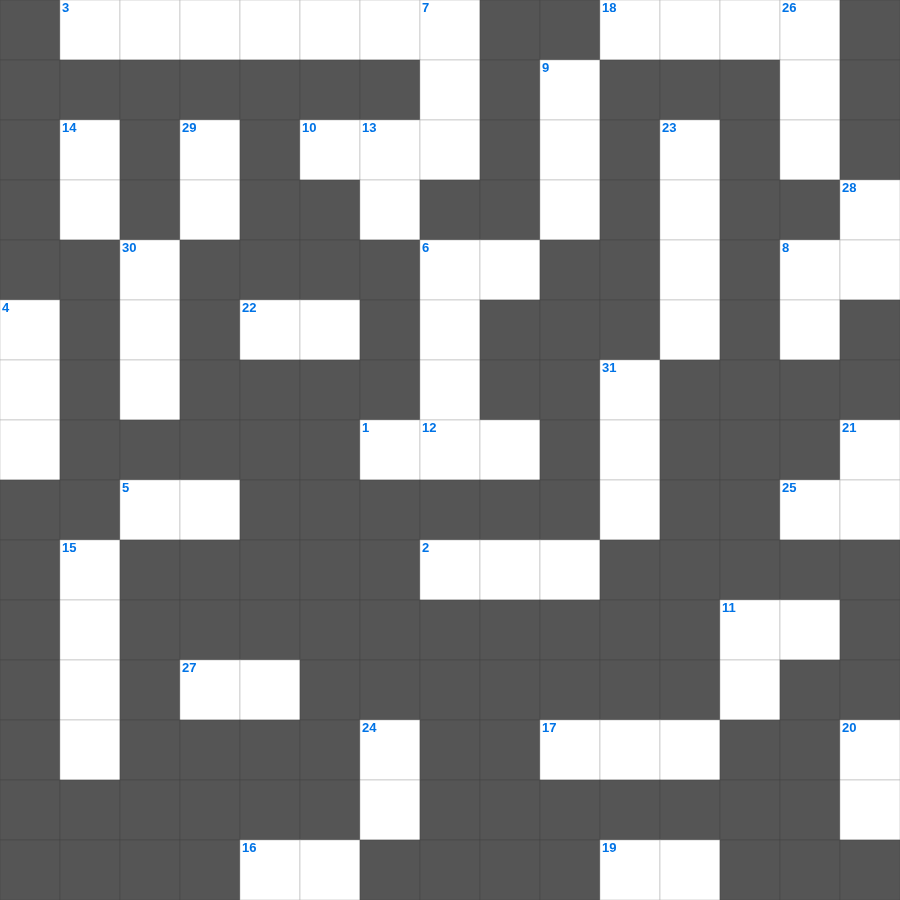

하박국 & 스바냐 마스터 50
📌 서비스 정의
십자가로세로는 교회 주보와 주일학교에서 사용할 수 있는 성경 기반 가로세로 퍼즐 서비스입니다. 성경 인물, 사건, 핵심 구절을 바탕으로 제작되었습니다. 온라인 풀이 및 인쇄 기능을 제공합니다.
📖 하박국란?
하박국은 악인이 형통하는 현실에 대해 하나님께 질문하고, '오직 의인은 믿음으로 살리라'는 응답을 받아 끝내 찬양으로 나아가는 예언서입니다.
📚 하박국의 주요 사건·주제
불의에 대한 하박국의 질문 · 하나님의 응답과 갈대아인 심판 예고 · 오직 믿음으로 살리라(하박국 2장) · 화 있을진저 선언들 · 하박국의 기도와 찬양(하박국 3장)
하박국를 주제로 한 하박국 낱말 퍼즐입니다. 35개의 단어를 맞춰보세요! 가로세로 낱말 퍼즐 형식으로 하박국의 핵심 내용을 재미있게 복습할 수 있습니다.

📝 가로 힌트
1. 아브라함의 아내
2. 그 이름들이 이것에 있느니라
3. 사무엘을 돌보았던 엘리 제사장의 두 아들
5. 오늘 우리에게 일용할 이것을 주시옵고
6. 에스겔이 예언한 새 성전의 법도 핵심은 '이것'이다
8. 귀신들이 항복하는 것으로 기뻐하지 말고 너희 이것이 하늘에 기록된 것으로 기뻐하라
10. 예레미야가 예언 사역을 시작했을 때의 유다 왕
11. 주 여호와의 말씀이니라 내가 어찌 악인이 죽는 것을 조금인들 이것 하랴
12. 여호수아가 보낸 두 정탐꾼을 숨겨준 기생
16. 아리마대의 부자 이것이 빌라도에게 가서 예수의 시체를 달라 하여 자기 새 무덤에 장사하니라
17. 바울의 동역자 부부 중 남편
18. 아브라함이 아비멜렉과 언약을 맺은 우물
19. 네가 이 세대에서 부한 자들을 명하여 마음을 높이지 말고 정함이 없는 이것에 소망을 두지 말고
22. 왕의 진노는 죽음의 사자들과 같아도 지혜로운 사람은 그것을 이것하게 하리라
25. 망령되고 허탄한 신화를 버리고 무엇에 이르도록 연단하라 했나
27. 사람과 짐승에게 붙어 괴롭힌 여섯 번째 재앙
📝 세로 힌트
4. 바울을 죽이기 전에는 먹지도 마시지도 않겠다고 맹세한 결사대의 인원 수
5. 내 어린 이것을 먹이라
6. 포기하지 아니하면 때가 이르매 이것으리라
7. 하나님이 르호보암에게 동족과 싸우지 말라고 보낸 선지자
8. 사무엘이 기름 부은 자, 다윗의 아버지
9. 요단 강을 건널 때 제사장들이 메고 앞장선 것
11. 하나님의 말씀을 손목에 매어 이것을 삼으라
13. 빌립이 사마리아에서 복음을 전할 때 마술로 사람들을 놀라게 했던 자
14. 에스라가 백성들에게 가르친 '하나님의 이것'
15. 하나님이 여호수아에게 반복하신 격려 '강하고 이것하라'
20. 죄에 대하여라 함은 그들이 나를 이것하지 아니함이요
21. 누구든지 다른 교훈을 하며 바른 말 곧 우리 주 예수 그리스도의 말씀과 이것에 관한 교훈을 따르지 아니하면
23. 바울이 기도 부탁을 하며 말씀이 어떻게 되기를 원했나
24. 데살로니가후서 3장 13절: 선을 행하다가 무엇하지 말라
26. 바울의 선교 동역자, 위로의 아들
28. 야곱이 얍복 강가에서 밤새도록 한 것
29. 말세에 사람들이 사랑하는 세 가지: 자기, 돈, 이것
30. 갈멜산에서 바알 선지자와 대결한 선지자
31. 바울과 함께 문안 인사를 전하는 형제
🧩 이 퍼즐에서 배우는 내용
이 퍼즐은 하박국 & 스바냐 마스터 50의 핵심 단어와 개념을 자연스럽게 복습할 수 있도록 구성되었습니다. 주일학교 수업이나 개인 성경공부에서 학습 내용을 점검하는 용도로 바로 활용할 수 있습니다.
🧑🏫 교회 교육 자료 활용
이 퍼즐은 주일학교 교재 추천 자료로 활용할 수 있고, 주일학교 주보에 넣기 좋은 분량으로 구성되어 있습니다. 수업용 주일학교 교안에 활동지로 붙이거나, 예배 후 복습용 주일학교 공과교재로 바로 사용할 수 있습니다.
🏷️ 키워드
하박국 낱말 퍼즐, 하박국, 십자가로세로, 성경퀴즈, 말씀퀴즈, 가로세로퍼즐, 주일학교 교재 추천, 주일학교 주보, 주일학교 교안, 주일학교 공과교재